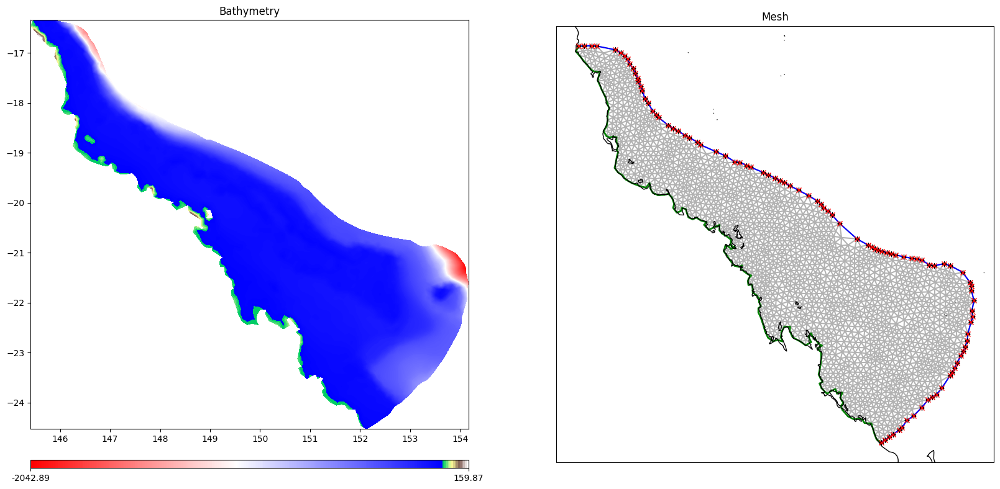
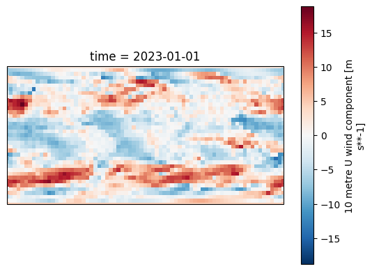
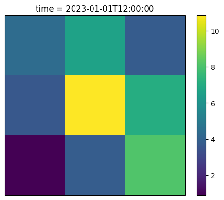
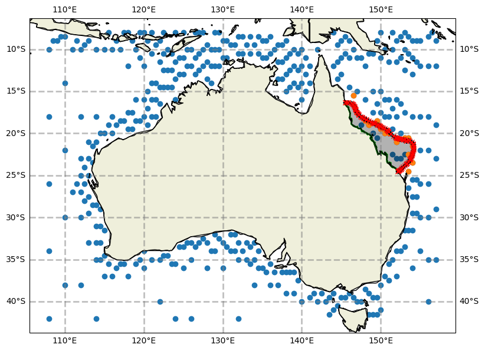

SCHISM procedural example#
In this notebook we will use the SCHOSM grid, config and data objects to define a SCHISM workspace
Frontmatter#
Required inputs and defination of a few helper functions
[1]:
%load_ext autoreload
%autoreload 2
# turn off warnings
import warnings
warnings.filterwarnings('ignore')
import sys
from datetime import datetime
from pathlib import Path
from rompy.core import DataBlob, TimeRange
from shutil import rmtree
import xarray as xr
import numpy as np
import matplotlib.pyplot as plt
import intake
import cartopy.crs as ccrs
import pandas as pd
import logging
logging.basicConfig(level=logging.INFO)
HERE = Path('./rompy/tests/schism')
# Define some useful functions for plotting outputs
from matplotlib.tri import Triangulation
import cartopy.feature as cfeature
#import cartopy.mpl.ticker as cticker
from cartopy.io.shapereader import Reader
from cartopy.feature import ShapelyFeature
from cartopy.mpl.ticker import LongitudeFormatter, LatitudeFormatter
lon_formatter = LongitudeFormatter()
lat_formatter = LatitudeFormatter()
import re
from pyproj import Proj, transform
import pytz
from scipy.spatial import KDTree
from scipy.interpolate import griddata
def schism_load(schfile):
'''
Ron: Load schism output file and parse the element/node values to create a (matplotlib) trimesh object for plotting
Returns xarray dataset and trimesh object
'''
schout = xr.open_dataset(schfile)
elems = np.int32(schout.SCHISM_hgrid_face_nodes[:,:-1]-1)
# Ron: get lat/lon coordinates of nodes - weird it appears x,y are switched
lons = schout.SCHISM_hgrid_node_y.values
lats = schout.SCHISM_hgrid_node_x.values
# create trimesh object
meshtri = Triangulation(lats, lons, triangles=elems)
return schout, meshtri
def schism_plot(schout, meshtri,varname,varscale=[],bbox=[],time=-1,mask=True,
vectors=False, plotmesh=False,project=False,contours=[10,30,50],
pscale=20,cmap=plt.cm.jet):
'''
plot output variable in xarray dataset (schout) using mesh information meshtri.
input:
schout: xarray dataset returned by def schism_load
meshtri: (matplotlib) trimesh object returned by def schism_load
varname: name of data variable in schout
OPTIONAL:
varscale: min/max plotting colour values (defalts to min/max)
bbox: bounding box for plotting [minlon,minlat,maxlon,maxlat] (defalts to data bounds)
time: time to plot (if a variable dimension), can be int (index) or datetime64-like object
plotmesh: plot the grid mesh (elemment boundaries)
project: use a map projection (cartopy, so that e.g. gis data can be added - this is slower
mask: mask out parts of the SCHISM output based on a minumum depth threshold
Returns xarray dataset and
We should modify this to load multiple files ... probably need assistance from DASK
'''
if 'time' in list(schout.dims):
if type(time)==int : # input ts is index
schout=schout.isel(time=time)
else: # assume is datetime64-like object
schout=schout.sel(time=time)
# By default, plot depth contours
# ... I like depth to be z (negative)
z=schout.depth*-1
if np.mean(contours)>0:
contours = np.flip(-1*np.asarray(contours))
else:
contours = np.asarray(contours)
if varname=='depth' or varname=='z':
var = z
else:
var=schout[varname]
if len(varscale)==0:
vmin=var.min()
vmax=var.max()
else:
vmin,vmax=varscale
if project:
x,y = meshtri.x,meshtri.y
fig, ax = plt.subplots(1, 1, figsize=(pscale,pscale),
subplot_kw={'projection': ccrs.PlateCarree()})
if len(bbox)==4:
ax.set_extent([bbox[0], bbox[2], bbox[1], bbox[3]], ccrs.PlateCarree())
else:
bbox=[x.min(),y.min(),x.max(),y.max()]
else:
fig, ax = plt.subplots(1, 1, figsize=(30,30))
if plotmesh:
ax.triplot(meshtri, color='k', alpha=0.3)
### MASKING ** doesnt work with tripcolor, must use tricontouf ###############################
# mask all places in the grid where depth is greater than elev (i.e. are "dry") by threshold below
if mask:
# temp=var.values
# threshold of + 0.05 seems pretty good *** But do we want to use the minimum depth
# defined in the SCHISM input (H0) and in output schout.minimum_depth
# bad_idx= schout.elev.values+schout.depth.values<0.05
bad_idx= schout.elev.values+schout.depth.values < schout.minimum_depth.values
# new way
mask = np.all(np.where(bad_idx[meshtri.triangles], True, False), axis=1)
meshtri.set_mask(mask)
extend='neither'
if (var.min()<vmin) & (var.max()>vmax):
extend='both'
elif var.min()<vmin:
extend='min'
elif var.max()>vmax:
extend='max'
cax = ax.tricontourf(meshtri, var, cmap=cmap,levels=np.linspace(vmin, vmax, 50), extend=extend)
#no mask#############################################################
else:
cax = ax.tripcolor(meshtri, var, cmap=cmap, vmin=vmin, vmax=vmax)
# quiver variables if asked
if vectors:
if re.search('WWM',varname):
vtype='waves'
else:
vtype='currents'
LonI,LatI,UI,VI=schism_calculate_vectors(ax, schout, vtype=vtype)
ax.quiver(LonI,LatI,UI,VI, color='k')
con = ax.tricontour(meshtri, z, contours, colors='k')
# ax.clabel(con, con.levels, inline=True, fmt='%i', fontsize=12)
if not(project):
ax.set_aspect('equal')
else:
# draw lat/lon grid lines every n degrees.
# n = (max(lat)-min(lat))/8
n = (bbox[2]-bbox[0])/5
for fac in [1,10,100]:
nr = np.round(n*fac)/fac
if nr>0:
n=nr
xticks = np.arange(np.round(bbox[0]*fac)/fac,np.round(bbox[2]*fac)/fac+n,n)
yticks = np.arange(np.round(bbox[1]*fac)/fac,np.round(bbox[3]*fac)/fac+n,n)
break
# ax.set_xticks(xticks, crs=ccrs.PlateCarree()
ax.set_xticks(xticks)
# ax.set_xticklabels(np.arange(np.round(min(x)),np.round(max(x)),n))
# ax.set_yticks(yticks, crs=ccrs.PlateCarree()
ax.set_yticks(yticks)
# ax.set_yticklabels(np.arange(np.round(min(y)),np.round(max(y)),n))
ax.yaxis.tick_left()
#lon_formatter = cticker.LongitudeFormatter()
#lat_formatter = cticker.LatitudeFormatter()
# New versions of marplotlib throw warnings on this - does it matter
# ax.xaxis.set_major_formatter(lon_formatter)
# ax.yaxis.set_major_formatter(lat_formatter)
#ax.set_xticks(lon_formatter)
#ax.set_yticks(lat_formatter)
ax.grid(linewidth=1, color='black', alpha=0.5, linestyle='--')
ax.add_feature(cfeature.BORDERS, linewidth=2)
if len(bbox)==4:
ax.set_ylim(bbox[1], bbox[3])
ax.set_xlim(bbox[0], bbox[2])
cbar = plt.colorbar(mappable=cax,shrink=0.5)
cbar.set_ticks(np.round(np.linspace(vmin,vmax,5)*100)/100)
cbar.set_label(varname)
return ax
#Nautical convention
def pol2cart2(rho, deg):
x, y = pol2cart(rho, deg/180.*np.pi)
return y, x
# Cartesian convention
def pol2cart(rho, phi):
x = rho * np.cos(phi)
y = rho * np.sin(phi)
return x, y
def schism_calculate_vectors(ax, schout, vtype='waves', dX='auto', mask=True):
pUTM55 = Proj('epsg:32755')
# pWGS84 = Proj('epsg:4326')
if vtype=='waves':
idx=(schout.WWM_1>0.05) & (schout.elev-schout.depth<0.1)
dp=schout.WWM_18[idx]
# hs=schout.WWM_1[idx]
hs=np.ones(dp.shape)
[u,v] = pol2cart2(hs, np.mod(dp+180, 360))
elif vtype=='elev'or re.search('curr',vtype):
idx=np.sqrt(schout.dahv[:,0]**2+schout.dahv[:,1]**2)>0.01
u = schout.dahv[idx,0]
v = schout.dahv[idx,1] #dahv has u and v components, so use index of 1 for v and index of 0 for u
else:
print('*** Warning input vecter data not understood')
x,y = pUTM55(schout.SCHISM_hgrid_node_x.values[idx],schout.SCHISM_hgrid_node_y.values[idx])
xlim,ylim=pUTM55(ax.get_xlim(),ax.get_ylim())
# might have to play with this - we assume a total of 100 arrows a side will be pleasing
if dX=='auto':
n=30
dX = np.ceil((ylim[1]-ylim[0])/n)
xi = np.arange(xlim[0],xlim[1]+dX,dX)
yi = np.arange(ylim[0],ylim[1]+dX,dX)
XI,YI = np.meshgrid(xi,yi)
UI = griddata((x,y),u,(XI,YI),method='linear')
VI = griddata((x,y),v,(XI,YI),method='linear')
# Create a mask so that place with very little data are removed
if mask:
xbins = np.arange(xlim[0],xlim[1]+2*dX,dX)
ybins = np.arange(ylim[0],ylim[1]+2*dX,dX)
densityH,_,_ = np.histogram2d(x, y, bins=[xbins,ybins])
densityH=densityH.T
# might want to adjust this...
idx=densityH<1
UI[idx]=np.NaN
VI[idx]=np.NaN
LonI,LatI = pUTM55(XI,YI, inverse=True)
return LonI,LatI,UI,VI
Workspace basepath#
[2]:
workdir = Path("schism_procedural")
if workdir.exists():
rmtree(workdir)
workdir.mkdir(exist_ok=True)
Model Grid#
[3]:
HERE
[3]:
PosixPath('rompy/tests/schism')
[4]:
(HERE / "test_data" / "hgrid.gr3")
[4]:
PosixPath('rompy/tests/schism/test_data/hgrid.gr3')
[5]:
DataBlob??
Init signature:
DataBlob(
*,
model_type: Literal['data_blob', 'data_link'] = 'data_blob',
id: str = 'data',
source: cloudpathlib.anypath.AnyPath,
link: bool = False,
) -> None
Source:
class DataBlob(RompyBaseModel):
"""Data source for model ingestion.
Generic data source for files that either need to be copied to the model directory
or linked if `link` is set to True.
"""
model_type: Literal["data_blob", "data_link"] = Field(
default="data_blob",
description="Model type discriminator",
)
id: str = Field(
default="data", description="Unique identifier for this data source"
)
source: AnyPath = Field(
description="URI of the data source, either a local file path or a remote uri",
)
link: bool = Field(
default=False, description="Whether to create a symbolic link instead of copying the file"
)
_copied: str = PrivateAttr(default=None)
def get(self, destdir: Union[str, Path], name: str = None, *args, **kwargs) -> Path:
"""Copy or link the data source to a new directory.
Parameters
----------
destdir : str | Path
The destination directory to copy or link the data source to.
Returns
-------
Path
The path to the copied file or created symlink.
"""
destdir = Path(destdir).resolve()
if self.link:
# Create a symbolic link
if name:
symlink_path = destdir / name
else:
symlink_path = destdir / self.source.name
# Ensure the destination directory exists
destdir.mkdir(parents=True, exist_ok=True)
# Remove existing symlink/file if it exists
if symlink_path.exists():
symlink_path.unlink()
# Compute the relative path from destdir to self.source
relative_source_path = os.path.relpath(self.source.resolve(), destdir)
# Create symlink
os.symlink(relative_source_path, symlink_path)
self._copied = symlink_path
return symlink_path
else:
# Copy the data source
if self.source.is_dir():
# Copy directory
outfile = copytree(self.source, destdir)
else:
if name:
outfile = destdir / name
else:
outfile = destdir / self.source.name
if outfile.resolve() != self.source.resolve():
outfile.write_bytes(self.source.read_bytes())
self._copied = outfile
return outfile
File: ~/rompy/rompy/core/data.py
Type: ModelMetaclass
Subclasses: DataGrid
[6]:
# Grid object
from rompy.schism import Inputs, SCHISMGrid
#SCHISMGrid?
# Medium sized grid, will run one day in about 3 minutes on 48 cores
hgrid = HERE / "test_data" / "hgrid.gr3"
# Fast running grid, will run in about 1 minute on 4 cores
#hgrid = HERE / "test_data" / "hgrid_20kmto60km_rompyschism_testing.gr3"
grid=SCHISMGrid(
hgrid=DataBlob(id="hgrid", source=hgrid),
drag=1,
)
grid.plot_hgrid()
WARNING:rompy.schism.grid:drag is being set to a constant value, this is not recommended. For best results, please supply friction gr3 files with spatially varying values. Further options are under development.

[7]:
workdir
[7]:
PosixPath('schism_procedural')
[8]:
grid.get(workdir)
list(workdir.glob('*'))
INFO:rompy.schism.grid:Generated albedo with constant value of 0.15
INFO:rompy.schism.grid:Generated diffmin with constant value of 1e-06
INFO:rompy.schism.grid:Generated diffmax with constant value of 1.0
INFO:rompy.schism.grid:Generated watertype with constant value of 1.0
INFO:rompy.schism.grid:Generated windrot_geo2proj with constant value of 0.0
INFO:rompy.schism.grid:Generated drag with constant value of 1.0
INFO:rompy.schism.grid:Linking hgrid.gr3 to schism_procedural/hgrid.ll
INFO:rompy.schism.grid:Linking hgrid.gr3 to schism_procedural/hgrid_WWM.gr3
[8]:
[PosixPath('schism_procedural/hgrid.gr3'),
PosixPath('schism_procedural/albedo.gr3'),
PosixPath('schism_procedural/diffmin.gr3'),
PosixPath('schism_procedural/diffmax.gr3'),
PosixPath('schism_procedural/watertype.gr3'),
PosixPath('schism_procedural/windrot_geo2proj.gr3'),
PosixPath('schism_procedural/drag.gr3'),
PosixPath('schism_procedural/hgrid.ll'),
PosixPath('schism_procedural/hgrid_WWM.gr3'),
PosixPath('schism_procedural/vgrid.in'),
PosixPath('schism_procedural/wwmbnd.gr3'),
PosixPath('schism_procedural/tvd.prop')]
Forcing data#
[9]:
# First lists import the main data classes
from rompy.schism.data import SCHISMDataSflux, SCHISMDataOcean, SCHISMDataWave, SCHISMDataTides
# Sets also import a few of the minor classes that are used in the construction of these main classes for use in this demo
from rompy.schism.data import SfluxSource, TidalDataset, SfluxAir, SCHISMDataBoundary
# And also lets import some of the core data source objects. These are data input abstractions that work in exactly the same way as
# with the swan classes, and can be used interchangeably in each of the data classes depending on the data source. We will use a
# bit of a mix here for illustration purposes.
from rompy.core.data import DataBlob, SourceFile, SourceDataset, SourceIntake, SourceDatamesh
from rompy.core.boundary import SourceWavespectra
Sflux Data#
[10]:
from rompy.schism.namelists import Sflux_Inputs
# SCHISMDataSflux??
# SfluxSource??
# Sflux_Inputs??
[11]:
import intake
cat = intake.open_catalog(HERE / ".." / "data" / "catalog.yaml")
ds = cat.era5.to_dask()
ax = plt.axes(projection=ccrs.PlateCarree())
ds.u10[0].plot(ax=ax, transform=ccrs.PlateCarree(), cmap="RdBu_r")
[11]:
<cartopy.mpl.geocollection.GeoQuadMesh at 0x14a780d6a920>

[12]:
# Lets have a look at an flux object. Here we will use a ERA5 dataset exposed through the intake catalog in the tests/data folder.
from rompy.core.time import TimeRange
atmos_forcing = SCHISMDataSflux(
air_1=SfluxAir(
id="air_1",
source=SourceIntake(
dataset_id="era5",
catalog_uri=HERE / ".." / "data" / "catalog.yaml",
),
filter={
"sort": {"coords": ["latitude"]},
},
buffer=2
)
)
atmos_forcing.get(destdir=workdir, grid=grid, time=TimeRange(start="2023-01-01", end="2023-01-02", dt=3600))
INFO:rompy.schism.data:Fetching air_1
[13]:
list(workdir.glob('**/*'))
[13]:
[PosixPath('schism_procedural/hgrid.gr3'),
PosixPath('schism_procedural/albedo.gr3'),
PosixPath('schism_procedural/diffmin.gr3'),
PosixPath('schism_procedural/diffmax.gr3'),
PosixPath('schism_procedural/watertype.gr3'),
PosixPath('schism_procedural/windrot_geo2proj.gr3'),
PosixPath('schism_procedural/drag.gr3'),
PosixPath('schism_procedural/hgrid.ll'),
PosixPath('schism_procedural/hgrid_WWM.gr3'),
PosixPath('schism_procedural/vgrid.in'),
PosixPath('schism_procedural/wwmbnd.gr3'),
PosixPath('schism_procedural/tvd.prop'),
PosixPath('schism_procedural/sflux'),
PosixPath('schism_procedural/sflux/air_1.0001.nc'),
PosixPath('schism_procedural/sflux/sflux_inputs.txt')]
[14]:
# Create a map
ax = plt.axes(projection=ccrs.PlateCarree())
# load the data
ds = xr.open_dataset("schism_procedural/sflux/air_1.0001.nc")
wind_speed = np.sqrt(ds.u10**2 + ds.v10**2)
# plot the data
wind_speed.isel(time=2).plot(ax=ax, transform=ccrs.PlateCarree())
[14]:
<cartopy.mpl.geocollection.GeoQuadMesh at 0x14a779a5afe0>

Ocean Boundary#
[15]:
#SCHISMDataOcean??
[16]:
ds = xr.open_dataset(HERE / "test_data" / "hycom.nc")
ax = plt.axes(projection=ccrs.PlateCarree())
ds["surf_el"].isel(time=0).plot(ax=ax, transform=ccrs.PlateCarree())
ax.coastlines()
[16]:
<cartopy.mpl.feature_artist.FeatureArtist at 0x14a779ac7910>

[17]:
ocean_forcing = SCHISMDataOcean(
elev2D = SCHISMDataBoundary(
id="hycom",
source=SourceFile(
uri=HERE / "test_data" / "hycom.nc",
),
variable="surf_el",
coords={"t": "time", "y": "ylat", "x": "xlon", "z": "depth"},
interpolate_missing_coastal=True,
),
)
[18]:
ocean_forcing.get(destdir=workdir, grid=grid)
list(workdir.glob("*"))
INFO:rompy.schism.data:Fetching elev2D
[18]:
[PosixPath('schism_procedural/hgrid.gr3'),
PosixPath('schism_procedural/albedo.gr3'),
PosixPath('schism_procedural/diffmin.gr3'),
PosixPath('schism_procedural/diffmax.gr3'),
PosixPath('schism_procedural/watertype.gr3'),
PosixPath('schism_procedural/windrot_geo2proj.gr3'),
PosixPath('schism_procedural/drag.gr3'),
PosixPath('schism_procedural/hgrid.ll'),
PosixPath('schism_procedural/hgrid_WWM.gr3'),
PosixPath('schism_procedural/vgrid.in'),
PosixPath('schism_procedural/wwmbnd.gr3'),
PosixPath('schism_procedural/tvd.prop'),
PosixPath('schism_procedural/sflux'),
PosixPath('schism_procedural/elev2D.th.nc')]
[19]:
dsb = xr.open_dataset('schism_procedural/elev2D.th.nc')
dsb.time[0]
[19]:
<xarray.DataArray 'time' ()> Size: 8B
array('2023-01-02T00:00:00.000000000', dtype='datetime64[ns]')
Coordinates:
time datetime64[ns] 8B 2023-01-02
Attributes:
long_name: Time
standard_name: time
base_date: [2023 1 2 0 0 0][20]:
vmin, vmax = 0.3, 0.9
time = dsb.time[0]
ax = plt.axes(projection=ccrs.PlateCarree())
ds["surf_el"].sel(time=time).plot(ax=ax, transform=ccrs.PlateCarree(), vmin=vmin, vmax=vmax)
ax.coastlines()
values = dsb.time_series.isel(time=0)
x,y = grid.boundary_points()
ax.scatter(x, y, transform=ccrs.PlateCarree(), c=values, cmap="viridis", vmin=vmin, vmax=vmax, edgecolor="black")
# Check for nans (there shouldn't be any)
# nans = dsb.time_series.isel(time=0).isnull().squeeze()
# ax.scatter(x[nans], y[nans], transform=ccrs.PlateCarree(), c="red", edgecolor="black")
[20]:
<matplotlib.collections.PathCollection at 0x14a7799a2b00>

[21]:
ocean_forcing.elev2D.ds
[21]:
<xarray.Dataset> Size: 14kB
Dimensions: (time: 3, ylat: 46, xlon: 25)
Coordinates:
* ylat (ylat) float64 368B -25.0 -24.8 -24.6 -24.4 ... -16.4 -16.2 -16.0
* xlon (xlon) float64 200B 145.0 145.4 145.8 146.2 ... 153.8 154.2 154.6
* time (time) datetime64[ns] 24B 2023-01-02 2023-01-03 2023-01-04
Data variables:
surf_el (time, ylat, xlon) float32 14kB ...
Attributes:
classification_level: UNCLASSIFIED
distribution_statement: Approved for public release. Distribution unli...
downgrade_date: not applicable
classification_authority: not applicable
institution: Fleet Numerical Meteorology and Oceanography C...
source: HYCOM archive file
history: archv2ncdf2d
comment: p-grid
field_type: instantaneous
Conventions: CF-1.6 NAVO_netcdf_v1.1Wave#
[22]:
# SCHISMDataWave??
[23]:
wave_forcing = SCHISMDataWave(
id="wavedata",
source=SourceIntake(
dataset_id="ausspec",
catalog_uri=HERE / ".." / "data" / "catalog.yaml",
),
coords={'x': "lon", 'y': "lat"},
)
[24]:
ax = wave_forcing.plot(model_grid=grid)
wave_forcing.plot_boundary(ax=ax, grid=grid)
[24]:
<GeoAxes: >

Tidal data#
[25]:
# SCHISMDataTides?
# TidalDataset?
[26]:
tidal_forcing = SCHISMDataTides(
tidal_data=TidalDataset(
elevations=HERE / "test_data"/ "tpxo9-test" / "h_m2s2n2.nc",
velocities=HERE / "test_data"/ "tpxo9-test" / "u_m2s2n2.nc"
),
constituents=["M2", "S2", "N2"],
)
tidal_forcing.get(
destdir=workdir,
grid=grid,
time=TimeRange(start="2023-01-01", end="2023-01-02", dt=3600),
)
INFO:rompy.schism.data:Generating tides
INFO:pyschism.forcing.bctides.bctides:Processing boundary 1:
INFO:pyschism.forcing.bctides.bctides:Elevation type: 5
WARNING:pyschism.forcing.bctides.bctides:Combination of 3 and 4, time history of elevation is read in from elev2D.th.nc!
INFO:pyschism.forcing.bctides.tpxo:Querying TPXO for elevation constituent M2.
INFO:pyschism.forcing.bctides.tpxo:h_file is rompy/tests/schism/test_data/tpxo9-test/h_m2s2n2.nc
INFO:pyschism.forcing.bctides.tpxo:Querying TPXO for elevation constituent S2.
INFO:pyschism.forcing.bctides.tpxo:Querying TPXO for elevation constituent N2.
INFO:pyschism.forcing.bctides.bctides:Velocity type: 3
INFO:pyschism.forcing.bctides.tpxo:Querying TPXO for velocity constituent M2.
INFO:pyschism.forcing.bctides.tpxo:u_file is rompy/tests/schism/test_data/tpxo9-test/u_m2s2n2.nc
INFO:pyschism.forcing.bctides.tpxo:Querying TPXO for velocity constituent S2.
INFO:pyschism.forcing.bctides.tpxo:Querying TPXO for velocity constituent N2.
INFO:pyschism.forcing.bctides.bctides:Temperature type: 0
WARNING:pyschism.forcing.bctides.bctides:Temperature is not sepcified, not input needed!
INFO:pyschism.forcing.bctides.bctides:Salinity type: 0
INFO:pyschism.forcing.bctides.bctides:Salinity is not sepcified, not input needed!
Full config object#
[27]:
# Instantiate a config object
from rompy.schism import SchismCSIROConfig
from rompy.schism.data import SCHISMData
from pydantic import ValidationError
try:
config=SchismCSIROConfig(
grid=grid,
data=SCHISMData(
atmos=atmos_forcing,
ocean=ocean_forcing,
wave=wave_forcing,
tides=tidal_forcing
),
)
except ValidationError as e:
print(e)
1 validation error for SchismCSIROConfig
Value error, manning.gr3 must be specified when nchi=-1 [type=value_error, input_value={'grid': SCHISMGrid([145....], sobc=[1], relax=[]))}, input_type=dict]
For further information visit https://errors.pydantic.dev/2.7/v/value_error
[28]:
# That gives us an expected error due to teh fact that we have a validator checking required inputs
# Lets fix the grid issue and try again
try:
config=SchismCSIROConfig(
grid=grid,
data=SCHISMData(
atmos=atmos_forcing,
ocean=ocean_forcing,
wave=wave_forcing,
tides=tidal_forcing
),
)
except ValidationError as e:
print(e)
# Again we get a validation error, the hgrid_WWM is missing. Lets add it and try again
grid=SCHISMGrid(
hgrid=DataBlob(id="hgrid", source=hgrid),
manning=1,
)
config=SchismCSIROConfig(
grid=grid,
mesbf=1,
fricc=0.067,
data=SCHISMData(
atmos=atmos_forcing,
ocean=ocean_forcing,
wave=wave_forcing,
tides=tidal_forcing
),
)
WARNING:rompy.schism.grid:manning is being set to a constant value, this is not recommended. For best results, please supply friction gr3 files with spatially varying values. Further options are under development.
1 validation error for SchismCSIROConfig
Value error, manning.gr3 must be specified when nchi=-1 [type=value_error, input_value={'grid': SCHISMGrid([145....], sobc=[1], relax=[]))}, input_type=dict]
For further information visit https://errors.pydantic.dev/2.7/v/value_error
Model Run#
Note that most fields are optional, this eample using defaults values.
Generate workspace#
[30]:
workdir
[30]:
PosixPath('schism_procedural')
[31]:
# having trouble using the workdir directory due to filesystem busy issues
[32]:
#workdir = Path('schism_procedural2')
[29]:
%pdb
Automatic pdb calling has been turned ON
[34]:
#if workdir.exists():
# rmtree(workdir)
#workdir.mkdir(exist_ok=True)
from rompy.model import ModelRun
from rompy.schism import SchismCSIROConfig
run = ModelRun(
run_id="test_schism",
period=TimeRange(start=datetime(2023, 1, 1, 0), end=datetime(2023, 1, 1, 12), interval="1h"),
output_dir=str(workdir),
config=config
)
rundir = run()
INFO:rompy.model:
INFO:rompy.model:-----------------------------------------------------
INFO:rompy.model:Model settings:
INFO:rompy.model:
run_id: test_schism
period:
Start: 2023-01-01 00:00:00
End: 2023-01-01 12:00:00
Duration: 12:00:00
Interval: 1:00:00
Include End: True
output_dir: schism_procedural
config: <class 'rompy.schism.config.SchismCSIROConfig'>
INFO:rompy.model:-----------------------------------------------------
INFO:rompy.model:Generating model input files in schism_procedural
INFO:rompy.schism.grid:Generated albedo with constant value of 0.15
INFO:rompy.schism.grid:Generated diffmin with constant value of 1e-06
INFO:rompy.schism.grid:Generated diffmax with constant value of 1.0
INFO:rompy.schism.grid:Generated watertype with constant value of 1.0
INFO:rompy.schism.grid:Generated windrot_geo2proj with constant value of 0.0
INFO:rompy.schism.grid:Generated manning with constant value of 1.0
INFO:rompy.schism.grid:Linking hgrid.gr3 to schism_procedural/test_schism/hgrid.ll
INFO:rompy.schism.grid:Linking hgrid.gr3 to schism_procedural/test_schism/hgrid_WWM.gr3
INFO:rompy.schism.data:Fetching air_1
INFO:rompy.schism.data:Fetching elev2D
INFO:rompy.schism.data:Fetching wavedata
INFO:rompy.schism.data:Generating tides
INFO:pyschism.forcing.bctides.bctides:Processing boundary 1:
INFO:pyschism.forcing.bctides.bctides:Elevation type: 5
WARNING:pyschism.forcing.bctides.bctides:Combination of 3 and 4, time history of elevation is read in from elev2D.th.nc!
INFO:pyschism.forcing.bctides.tpxo:Querying TPXO for elevation constituent M2.
INFO:pyschism.forcing.bctides.tpxo:h_file is rompy/tests/schism/test_data/tpxo9-test/h_m2s2n2.nc
INFO:pyschism.forcing.bctides.tpxo:Querying TPXO for elevation constituent S2.
INFO:pyschism.forcing.bctides.tpxo:Querying TPXO for elevation constituent N2.
INFO:pyschism.forcing.bctides.bctides:Velocity type: 3
INFO:pyschism.forcing.bctides.tpxo:Querying TPXO for velocity constituent M2.
INFO:pyschism.forcing.bctides.tpxo:u_file is rompy/tests/schism/test_data/tpxo9-test/u_m2s2n2.nc
INFO:pyschism.forcing.bctides.tpxo:Querying TPXO for velocity constituent S2.
INFO:pyschism.forcing.bctides.tpxo:Querying TPXO for velocity constituent N2.
INFO:pyschism.forcing.bctides.bctides:Temperature type: 0
WARNING:pyschism.forcing.bctides.bctides:Temperature is not sepcified, not input needed!
INFO:pyschism.forcing.bctides.bctides:Salinity type: 0
INFO:pyschism.forcing.bctides.bctides:Salinity is not sepcified, not input needed!
INFO:rompy.model:
INFO:rompy.model:Successfully generated project in schism_procedural
INFO:rompy.model:-----------------------------------------------------
Lets try that again except using a DataBlob and then a DataBlob link for wave forcing#
[43]:
wave_forcing = DataBlob(id="wavedata", source="../../tests/data/wavedata.nc")
[44]:
grid=SCHISMGrid(
hgrid=DataBlob(id="hgrid", source=hgrid),
manning=1,
)
config=SchismCSIROConfig(
grid=grid,
mesbf=1,
fricc=0.067,
data=SCHISMData(
atmos=atmos_forcing,
ocean=ocean_forcing,
wave=wave_forcing,
tides=tidal_forcing
),
)
WARNING:rompy.schism.grid:manning is being set to a constant value, this is not recommended. For best results, please supply friction gr3 files with spatially varying values. Further options are under development.
[45]:
from rompy.model import ModelRun
from rompy.schism import SchismCSIROConfig
[46]:
#!rm -rf schism_procedural/2
[47]:
run = ModelRun(
run_id="test_schism",
period=TimeRange(start=datetime(2023, 1, 1, 0), end=datetime(2023, 1, 1, 12), interval="1h"),
output_dir=str(workdir / '2'),
config=config
)
[48]:
rundir = run()
INFO:rompy.model:
INFO:rompy.model:-----------------------------------------------------
INFO:rompy.model:Model settings:
INFO:rompy.model:
run_id: test_schism
period:
Start: 2023-01-01 00:00:00
End: 2023-01-01 12:00:00
Duration: 12:00:00
Interval: 1:00:00
Include End: True
output_dir: schism_procedural/2
config: <class 'rompy.schism.config.SchismCSIROConfig'>
INFO:rompy.model:-----------------------------------------------------
INFO:rompy.model:Generating model input files in schism_procedural/2
INFO:rompy.schism.grid:Generated albedo with constant value of 0.15
INFO:rompy.schism.grid:Generated diffmin with constant value of 1e-06
INFO:rompy.schism.grid:Generated diffmax with constant value of 1.0
INFO:rompy.schism.grid:Generated watertype with constant value of 1.0
INFO:rompy.schism.grid:Generated windrot_geo2proj with constant value of 0.0
INFO:rompy.schism.grid:Generated manning with constant value of 1.0
INFO:rompy.schism.grid:Linking hgrid.gr3 to schism_procedural/2/test_schism/hgrid.ll
INFO:rompy.schism.grid:Linking hgrid.gr3 to schism_procedural/2/test_schism/hgrid_WWM.gr3
INFO:rompy.schism.data:Fetching air_1
INFO:rompy.schism.data:Fetching elev2D
---------------------------------------------------------------------------
IndexError Traceback (most recent call last)
Cell In[48], line 1
----> 1 rundir = run()
File ~/rompy/rompy/model.py:141, in ModelRun.__call__(self)
140 def __call__(self):
--> 141 return self.generate()
File ~/rompy/rompy/model.py:98, in ModelRun.generate(self)
93 cc_full["runtime"].update({"_datefmt": self._datefmt})
95 if callable(self.config):
96 # Run the __call__() method of the config object if it is callable passing
97 # the runtime instance, and fill in the context with what is returned
---> 98 cc_full["config"] = self.config(self)
99 else:
100 # Otherwise just fill in the context with the config instance itself
101 cc_full["config"] = self.config
File ~/rompy/rompy/schism/config.py:384, in SchismCSIROConfig.__call__(self, runtime)
381 ret["grid"] = self.grid.get(runtime.staging_dir)
382 # TODO Still need to link up these maybe?
383 ret.update(
--> 384 self.data.get(
385 destdir=runtime.staging_dir, grid=self.grid, time=runtime.period
386 )
387 )
388 return ret
File ~/rompy/rompy/schism/data.py:694, in SCHISMData.get(self, destdir, grid, time)
692 output = data.get(destdir)
693 else:
--> 694 output = data.get(destdir, grid, time)
695 ret.update({datatype: output})
696 # ret[
697 # "wave"
698 # ] = "dummy" # Just to make cookiecutter happy if excluding wave forcing
File ~/rompy/rompy/schism/data.py:547, in SCHISMDataOcean.get(self, destdir, grid, time)
545 if data is None:
546 continue
--> 547 data.get(destdir, grid, time)
File ~/rompy/rompy/schism/data.py:407, in SCHISMDataBoundary.get(self, destdir, grid, time)
405 # prepare xarray.Dataset and save forcing netCDF file
406 outfile = Path(destdir) / f"{self.id}.th.nc"
--> 407 boundary_ds = self.boundary_ds(grid, time)
408 boundary_ds.to_netcdf(outfile, "w", "NETCDF3_CLASSIC", unlimited_dims="time")
409 return outfile
File ~/rompy/rompy/schism/data.py:414, in SCHISMDataBoundary.boundary_ds(self, grid, time)
412 logger.info(f"Fetching {self.id}")
413 if self.crop_data and time is not None:
--> 414 self._filter_time(time)
415 ds = self._sel_boundary(grid)
416 if len(ds.time) > 1:
File ~/rompy/rompy/core/data.py:413, in DataGrid._filter_time(self, time, end_buffer)
411 end = time.end
412 if self.coords.t in self.ds.dims:
--> 413 dt = self.ds[self.coords.t][1].values - self.ds[self.coords.t][0].values
414 # Convert to regular timedelta64
415 regular_timedelta = dt.astype("timedelta64[s]")
File /g/data/v95/bl8867/rompyenv/lib/python3.10/site-packages/xarray/core/dataarray.py:875, in DataArray.__getitem__(self, key)
872 return self._getitem_coord(key)
873 else:
874 # xarray-style array indexing
--> 875 return self.isel(indexers=self._item_key_to_dict(key))
File /g/data/v95/bl8867/rompyenv/lib/python3.10/site-packages/xarray/core/dataarray.py:1508, in DataArray.isel(self, indexers, drop, missing_dims, **indexers_kwargs)
1503 return self._from_temp_dataset(ds)
1505 # Much faster algorithm for when all indexers are ints, slices, one-dimensional
1506 # lists, or zero or one-dimensional np.ndarray's
-> 1508 variable = self._variable.isel(indexers, missing_dims=missing_dims)
1509 indexes, index_variables = isel_indexes(self.xindexes, indexers)
1511 coords = {}
File /g/data/v95/bl8867/rompyenv/lib/python3.10/site-packages/xarray/core/variable.py:1033, in Variable.isel(self, indexers, missing_dims, **indexers_kwargs)
1030 indexers = drop_dims_from_indexers(indexers, self.dims, missing_dims)
1032 key = tuple(indexers.get(dim, slice(None)) for dim in self.dims)
-> 1033 return self[key]
File /g/data/v95/bl8867/rompyenv/lib/python3.10/site-packages/xarray/core/variable.py:800, in Variable.__getitem__(self, key)
797 dims, indexer, new_order = self._broadcast_indexes(key)
798 indexable = as_indexable(self._data)
--> 800 data = indexing.apply_indexer(indexable, indexer)
802 if new_order:
803 data = np.moveaxis(data, range(len(new_order)), new_order)
File /g/data/v95/bl8867/rompyenv/lib/python3.10/site-packages/xarray/core/indexing.py:1026, in apply_indexer(indexable, indexer)
1024 return indexable.oindex[indexer]
1025 else:
-> 1026 return indexable[indexer]
File /g/data/v95/bl8867/rompyenv/lib/python3.10/site-packages/xarray/core/indexing.py:1782, in PandasIndexingAdapter.__getitem__(self, indexer)
1779 indexable = NumpyIndexingAdapter(np.asarray(self))
1780 return indexable[indexer]
-> 1782 result = self.array[key]
1784 return self._handle_result(result)
File /g/data/v95/bl8867/rompyenv/lib/python3.10/site-packages/pandas/core/indexes/base.py:5389, in Index.__getitem__(self, key)
5386 if is_integer(key) or is_float(key):
5387 # GH#44051 exclude bool, which would return a 2d ndarray
5388 key = com.cast_scalar_indexer(key)
-> 5389 return getitem(key)
5391 if isinstance(key, slice):
5392 # This case is separated from the conditional above to avoid
5393 # pessimization com.is_bool_indexer and ndim checks.
5394 return self._getitem_slice(key)
File /g/data/v95/bl8867/rompyenv/lib/python3.10/site-packages/pandas/core/arrays/datetimelike.py:381, in DatetimeLikeArrayMixin.__getitem__(self, key)
374 """
375 This getitem defers to the underlying array, which by-definition can
376 only handle list-likes, slices, and integer scalars
377 """
378 # Use cast as we know we will get back a DatetimeLikeArray or DTScalar,
379 # but skip evaluating the Union at runtime for performance
380 # (see https://github.com/pandas-dev/pandas/pull/44624)
--> 381 result = cast("Union[Self, DTScalarOrNaT]", super().__getitem__(key))
382 if lib.is_scalar(result):
383 return result
File /g/data/v95/bl8867/rompyenv/lib/python3.10/site-packages/pandas/core/arrays/_mixins.py:284, in NDArrayBackedExtensionArray.__getitem__(self, key)
278 def __getitem__(
279 self,
280 key: PositionalIndexer2D,
281 ) -> Self | Any:
282 if lib.is_integer(key):
283 # fast-path
--> 284 result = self._ndarray[key]
285 if self.ndim == 1:
286 return self._box_func(result)
IndexError: index 1 is out of bounds for axis 0 with size 1
> /g/data/v95/bl8867/rompyenv/lib/python3.10/site-packages/pandas/core/arrays/_mixins.py(284)__getitem__()
282 if lib.is_integer(key):
283 # fast-path
--> 284 result = self._ndarray[key]
285 if self.ndim == 1:
286 return self._box_func(result)
ipdb> u
> /g/data/v95/bl8867/rompyenv/lib/python3.10/site-packages/pandas/core/arrays/datetimelike.py(381)__getitem__()
379 # but skip evaluating the Union at runtime for performance
380 # (see https://github.com/pandas-dev/pandas/pull/44624)
--> 381 result = cast("Union[Self, DTScalarOrNaT]", super().__getitem__(key))
382 if lib.is_scalar(result):
383 return result
ipdb> u
> /g/data/v95/bl8867/rompyenv/lib/python3.10/site-packages/pandas/core/indexes/base.py(5389)__getitem__()
5387 # GH#44051 exclude bool, which would return a 2d ndarray
5388 key = com.cast_scalar_indexer(key)
-> 5389 return getitem(key)
5390
5391 if isinstance(key, slice):
ipdb> u
> /g/data/v95/bl8867/rompyenv/lib/python3.10/site-packages/xarray/core/indexing.py(1782)__getitem__()
1780 return indexable[indexer]
1781
-> 1782 result = self.array[key]
1783
1784 return self._handle_result(result)
ipdb> u
> /g/data/v95/bl8867/rompyenv/lib/python3.10/site-packages/xarray/core/indexing.py(1026)apply_indexer()
1024 return indexable.oindex[indexer]
1025 else:
-> 1026 return indexable[indexer]
1027
1028
ipdb> u
> /g/data/v95/bl8867/rompyenv/lib/python3.10/site-packages/xarray/core/variable.py(800)__getitem__()
798 indexable = as_indexable(self._data)
799
--> 800 data = indexing.apply_indexer(indexable, indexer)
801
802 if new_order:
ipdb> u
> /g/data/v95/bl8867/rompyenv/lib/python3.10/site-packages/xarray/core/variable.py(1033)isel()
1031
1032 key = tuple(indexers.get(dim, slice(None)) for dim in self.dims)
-> 1033 return self[key]
1034
1035 def squeeze(self, dim=None):
ipdb> u
> /g/data/v95/bl8867/rompyenv/lib/python3.10/site-packages/xarray/core/dataarray.py(1508)isel()
1506 # lists, or zero or one-dimensional np.ndarray's
1507
-> 1508 variable = self._variable.isel(indexers, missing_dims=missing_dims)
1509 indexes, index_variables = isel_indexes(self.xindexes, indexers)
1510
ipdb> u
> /g/data/v95/bl8867/rompyenv/lib/python3.10/site-packages/xarray/core/dataarray.py(875)__getitem__()
873 else:
874 # xarray-style array indexing
--> 875 return self.isel(indexers=self._item_key_to_dict(key))
876
877 def __setitem__(self, key: Any, value: Any) -> None:
ipdb> u
> /home/599/bl8867/rompy/rompy/core/data.py(413)_filter_time()
411 end = time.end
412 if self.coords.t in self.ds.dims:
--> 413 dt = self.ds[self.coords.t][1].values - self.ds[self.coords.t][0].values
414 # Convert to regular timedelta64
415 regular_timedelta = dt.astype("timedelta64[s]")
ipdb> len(self.ds[self.coords.t])
1
ipdb> c
And a DataBlob symlink#
[30]:
wave_forcing = DataBlob(id="wavedata", source="../../tests/data/wavedata.nc", link=True)
[31]:
grid=SCHISMGrid(
hgrid=DataBlob(id="hgrid", source=hgrid),
manning=1,
)
config=SchismCSIROConfig(
grid=grid,
mesbf=1,
fricc=0.067,
data=SCHISMData(
atmos=atmos_forcing,
ocean=ocean_forcing,
wave=wave_forcing,
tides=tidal_forcing
),
)
WARNING:rompy.schism.grid:manning is being set to a constant value, this is not recommended. For best results, please supply friction gr3 files with spatially varying values. Further options are under development.
[33]:
workdir / '3'
[33]:
PosixPath('schism_procedural/3')
[32]:
from rompy.model import ModelRun
from rompy.schism import SchismCSIROConfig
run = ModelRun(
run_id="test_schism",
period=TimeRange(start=datetime(2023, 1, 1, 0), end=datetime(2023, 1, 1, 12), interval="1h"),
output_dir=str(workdir / '3'),
config=config
)
rundir = run()
INFO:rompy.model:
INFO:rompy.model:-----------------------------------------------------
INFO:rompy.model:Model settings:
INFO:rompy.model:
run_id: test_schism
period:
Start: 2023-01-01 00:00:00
End: 2023-01-01 12:00:00
Duration: 12:00:00
Interval: 1:00:00
Include End: True
output_dir: schism_procedural/3
config: <class 'rompy.schism.config.SchismCSIROConfig'>
INFO:rompy.model:-----------------------------------------------------
INFO:rompy.model:Generating model input files in schism_procedural/3
INFO:rompy.schism.grid:Generated albedo with constant value of 0.15
INFO:rompy.schism.grid:Generated diffmin with constant value of 1e-06
INFO:rompy.schism.grid:Generated diffmax with constant value of 1.0
INFO:rompy.schism.grid:Generated watertype with constant value of 1.0
INFO:rompy.schism.grid:Generated windrot_geo2proj with constant value of 0.0
INFO:rompy.schism.grid:Generated manning with constant value of 1.0
INFO:rompy.schism.grid:Linking hgrid.gr3 to schism_procedural/3/test_schism/hgrid.ll
INFO:rompy.schism.grid:Linking hgrid.gr3 to schism_procedural/3/test_schism/hgrid_WWM.gr3
INFO:rompy.schism.data:Fetching air_1
INFO:rompy.schism.data:Fetching elev2D
INFO:rompy.schism.data:Generating tides
INFO:pyschism.forcing.bctides.bctides:Processing boundary 1:
INFO:pyschism.forcing.bctides.bctides:Elevation type: 5
WARNING:pyschism.forcing.bctides.bctides:Combination of 3 and 4, time history of elevation is read in from elev2D.th.nc!
INFO:pyschism.forcing.bctides.tpxo:Querying TPXO for elevation constituent M2.
INFO:pyschism.forcing.bctides.tpxo:h_file is rompy/tests/schism/test_data/tpxo9-test/h_m2s2n2.nc
INFO:pyschism.forcing.bctides.tpxo:Querying TPXO for elevation constituent S2.
INFO:pyschism.forcing.bctides.tpxo:Querying TPXO for elevation constituent N2.
INFO:pyschism.forcing.bctides.bctides:Velocity type: 3
INFO:pyschism.forcing.bctides.tpxo:Querying TPXO for velocity constituent M2.
INFO:pyschism.forcing.bctides.tpxo:u_file is rompy/tests/schism/test_data/tpxo9-test/u_m2s2n2.nc
INFO:pyschism.forcing.bctides.tpxo:Querying TPXO for velocity constituent S2.
INFO:pyschism.forcing.bctides.tpxo:Querying TPXO for velocity constituent N2.
INFO:pyschism.forcing.bctides.bctides:Temperature type: 0
WARNING:pyschism.forcing.bctides.bctides:Temperature is not sepcified, not input needed!
INFO:pyschism.forcing.bctides.bctides:Salinity type: 0
INFO:pyschism.forcing.bctides.bctides:Salinity is not sepcified, not input needed!
INFO:rompy.model:
INFO:rompy.model:Successfully generated project in schism_procedural/3
INFO:rompy.model:-----------------------------------------------------
Run schism#
(Note that paths to schism binaries will have to be updated)
[32]:
# Run the model
!cd schism_procedural/test_schism && mpirun -np 4 /source/schism/src/_VL_WWM 1
/bin/bash: line 1: mpirun: command not found
[ ]:
# Combine outputs
!cd schism_procedural/test_schism/outputs && /source/schism/src/Utility/Combining_Scripts/combine_output11.exe -b 1 -e 1
Check results#
[ ]:
list(Path(f"{rundir}/outputs").glob("*"))
[ ]:
#load schism files
schfile=('schism_procedural/test_schism/outputs/schout_1.nc')
schout,meshtri=schism_load(schfile)
lons = schout.SCHISM_hgrid_node_y.values
lats = schout.SCHISM_hgrid_node_x.values
schout
[ ]:
# plot gridded fields - elevation
for ix, time in enumerate(schout.time[5:8].values):
#fig = plt.figure(facecolor='w', figsize=(5,4))
ax = fig.add_subplot(111)
ax.annotate(pd.to_datetime(time).strftime('%d-%b-%Y %H:00'), fontsize=14,
xy=(lons.min()+0.0005,lats.max()-0.0002), xycoords='data')
cax=schism_plot(schout, meshtri,'elev', bbox=[145,-25,155,-16], project=True, plotmesh=True, mask=False,
vectors=True, varscale=(-9,9),contours=[0])
ax.tick_params( axis = 'both', which ='major', labelsize = 24)
fig.subplots_adjust(left=0.05, bottom=0.07, right=0.96, top=0.93)
#figname = '/path_to_your_dir/elev_%02d.png'%ix
plt.show()
plt.close()
[ ]:
# plot gridded fields - Hs
for ix, time in enumerate(schout.time[5:8].values):
#fig = plt.figure(facecolor='w', figsize=(5,4))
ax = fig.add_subplot(111)
ax.annotate(pd.to_datetime(time).strftime('%d-%b-%Y %H:00'), fontsize=14,
xy=(lons.min()+0.0005,lats.max()-0.0002), xycoords='data')
cax=schism_plot(schout, meshtri,'WWM_1', bbox=[145,-25,155,-16], project=True, plotmesh=True, mask=False,
vectors=True, varscale=(0,5),contours=[0])
ax.tick_params( axis = 'both', which ='major', labelsize = 24)
fig.subplots_adjust(left=0.05, bottom=0.07, right=0.96, top=0.93)
#figname = '/path_to_your_dir/Hs_%02d.png'%ix
plt.show()
plt.close()
[ ]:
# The full model can be dumped to a configuration file.
import yaml
# dump full model to yaml
with open('model.yaml', 'w') as f:
yaml.dump(run.model_dump(), f)
[ ]:
!cat model.yaml
Running from configuration files.#
The full model dump above looks complex due to the fact that the full model state, including all default value, is written to the model.yaml file. The same model configuration can be achived in a much simpler file by simply specifying non default values. For example, the entire configuration above is specified in the demo.yaml file shown below
[25]:
!cat demo.yaml
output_dir: schism_declaritive
period:
start: 20230101T00
end: 20230101T12
interval: 3600
run_id: test_schism
config:
model_type: schismcsiro
mesbf: 1
fricc: 0.067
grid:
grid_type: schism
hgrid:
id: hgrid
model_type: data_blob
#source: ../../tests/schism/test_data/hgrid.gr3
source: ../../tests/schism/test_data/hgrid_20kmto60km_rompyschism_testing.gr3
manning: 1
data:
data_type: schism
atmos:
air_1:
source:
uri: ../../tests/schism/test_data/atmos.nc
model_type: open_dataset
uwind_name: u10
vwind_name: v10
prml_name: mslp
filter:
sort: {coords: [latitude]}
buffer: 5
ocean:
elev2D:
buffer: 0.0
coords:
t: time
x: xlon
y: ylat
z: depth
source:
uri: ../../tests/schism/test_data/hycom.nc
model_type: open_dataset
variable: surf_el
tides:
constituents:
- M2
- S2
- N2
cutoff_depth: 50.0
flags:
- [5, 3, 0, 0]
tidal_data:
data_type: tidal_dataset
elevations: ../../tests/schism/test_data/tpxo9-neaus/h_m2s2n2.nc
velocities: ../../tests/schism/test_data/tpxo9-neaus/u_m2s2n2.nc
wave:
buffer: 0.0
coords:
t: time
x: lon
y: lat
z: depth
id: wavedata
source:
catalog_uri: ../../tests/data/catalog.yaml
dataset_id: ausspec
model_type: intake
[60]:
# This can be loaded and used to instatiate the model object and run as above, e.g
import yaml
demo_config = yaml.load(open('demo.yaml', 'r'), Loader=yaml.FullLoader)
run = ModelRun(**demo_config)
run()
WARNING:rompy.schism.grid:manning is being set to a constant value, this is not recommended. For best results, please supply friction gr3 files with spatially varying values. Further options are under development.
INFO:rompy.model:
INFO:rompy.model:-----------------------------------------------------
INFO:rompy.model:Model settings:
INFO:rompy.model:
run_id: test_schism
period:
Start: 2023-01-01 00:00:00
End: 2023-01-01 12:00:00
Duration: 12:00:00
Interval: None
Include End: True
output_dir: schism_declaritive
config: <class 'rompy.schism.config.SchismCSIROConfig'>
INFO:rompy.model:-----------------------------------------------------
INFO:rompy.model:Generating model input files in schism_declaritive
INFO:rompy.schism.grid:Generated albedo with constant value of 0.15
INFO:rompy.schism.grid:Generated diffmin with constant value of 1e-06
INFO:rompy.schism.grid:Generated diffmax with constant value of 1.0
INFO:rompy.schism.grid:Generated watertype with constant value of 1.0
INFO:rompy.schism.grid:Generated windrot_geo2proj with constant value of 0.0
INFO:rompy.schism.grid:Generated manning with constant value of 1.0
INFO:rompy.schism.grid:Linking hgrid.gr3 to schism_declaritive/test_schism/hgrid.ll
INFO:rompy.schism.grid:Linking hgrid.gr3 to schism_declaritive/test_schism/hgrid_WWM.gr3
INFO:rompy.schism.data:Fetching air_1
INFO:rompy.schism.data:Fetching elev2D
INFO:rompy.schism.data:Fetching wavedata
INFO:rompy.schism.data:Generating tides
INFO:pyschism.forcing.bctides.bctides:Processing boundary 1:
INFO:pyschism.forcing.bctides.bctides:Elevation type: 5
WARNING:pyschism.forcing.bctides.bctides:Combination of 3 and 4, time history of elevation is read in from elev2D.th.nc!
INFO:pyschism.forcing.bctides.tpxo:Querying TPXO for elevation constituent M2.
INFO:pyschism.forcing.bctides.tpxo:Querying TPXO for elevation constituent S2.
INFO:pyschism.forcing.bctides.tpxo:Querying TPXO for elevation constituent N2.
INFO:pyschism.forcing.bctides.bctides:Velocity type: 3
INFO:pyschism.forcing.bctides.tpxo:Querying TPXO for velocity constituent M2.
INFO:pyschism.forcing.bctides.tpxo:Querying TPXO for velocity constituent S2.
INFO:pyschism.forcing.bctides.tpxo:Querying TPXO for velocity constituent N2.
INFO:pyschism.forcing.bctides.bctides:Temperature type: 0
WARNING:pyschism.forcing.bctides.bctides:Temperature is not sepcified, not input needed!
INFO:pyschism.forcing.bctides.bctides:Salinity type: 0
INFO:pyschism.forcing.bctides.bctides:Salinity is not sepcified, not input needed!
INFO:rompy.model:
INFO:rompy.model:Successfully generated project in schism_declaritive
INFO:rompy.model:-----------------------------------------------------
[60]:
'/source/rompy/notebooks/schism/schism_declaritive/test_schism'
[63]:
# Alternatively, this same config can be run directly using the rompy cli
!rm -fr schism_declaritive #remove previous run
!rompy schism demo.yaml
manning is being set to a constant value, this is not recommended. For best results, please supply friction gr3 files with spatially varying values. Further options are under development.
/source/rompy/.venv/lib/python3.11/site-packages/xarray/core/dataset.py:275: UserWarning: The specified chunks separate the stored chunks along dimension "time" starting at index 1. This could degrade performance. Instead, consider rechunking after loading.
warnings.warn(
/source/rompy/.venv/lib/python3.11/site-packages/intake_xarray/base.py:21: FutureWarning: The return type of `Dataset.dims` will be changed to return a set of dimension names in future, in order to be more consistent with `DataArray.dims`. To access a mapping from dimension names to lengths, please use `Dataset.sizes`.
'dims': dict(self._ds.dims),
/source/rompy/.venv/lib/python3.11/site-packages/pydantic/main.py:308: UserWarning: Pydantic serializer warnings:
Expected `Union[BaseConfig, SwanConfig, definition-ref, definition-ref, SchismCSIROConfig]` but got `SchismCSIROConfig` - serialized value may not be as expected
Expected `SfluxSource` but got `str` - serialized value may not be as expected
Expected `dict[any, any]` but got `str` - serialized value may not be as expected
Expected `str` but got `int` - serialized value may not be as expected
return self.__pydantic_serializer__.to_python(
/source/rompy/.venv/lib/python3.11/site-packages/pydantic/main.py:308: UserWarning: Pydantic serializer warnings:
Expected `SfluxSource` but got `str` - serialized value may not be as expected
Expected `dict[any, any]` but got `str` - serialized value may not be as expected
Expected `str` but got `int` - serialized value may not be as expected
return self.__pydantic_serializer__.to_python(
/source/rompy/.venv/lib/python3.11/site-packages/pydantic/main.py:308: UserWarning: Pydantic serializer warnings:
Expected `SfluxSource` but got `str` - serialized value may not be as expected
return self.__pydantic_serializer__.to_python(
/source/rompy/rompy/core/filters.py:127: FutureWarning: The return type of `Dataset.dims` will be changed to return a set of dimension names in future, in order to be more consistent with `DataArray.dims`. To access a mapping from dimension names to lengths, please use `Dataset.sizes`.
if k in ds.dims.keys()
/source/rompy/rompy/core/filters.py:131: FutureWarning: The return type of `Dataset.dims` will be changed to return a set of dimension names in future, in order to be more consistent with `DataArray.dims`. To access a mapping from dimension names to lengths, please use `Dataset.sizes`.
if (k not in ds.dims.keys()) and (k in ds.coords.keys()):
/source/rompy/rompy/core/filters.py:127: FutureWarning: The return type of `Dataset.dims` will be changed to return a set of dimension names in future, in order to be more consistent with `DataArray.dims`. To access a mapping from dimension names to lengths, please use `Dataset.sizes`.
if k in ds.dims.keys()
/source/rompy/rompy/core/filters.py:131: FutureWarning: The return type of `Dataset.dims` will be changed to return a set of dimension names in future, in order to be more consistent with `DataArray.dims`. To access a mapping from dimension names to lengths, please use `Dataset.sizes`.
if (k not in ds.dims.keys()) and (k in ds.coords.keys()):
/source/rompy/rompy/core/filters.py:127: FutureWarning: The return type of `Dataset.dims` will be changed to return a set of dimension names in future, in order to be more consistent with `DataArray.dims`. To access a mapping from dimension names to lengths, please use `Dataset.sizes`.
if k in ds.dims.keys()
/source/rompy/rompy/core/filters.py:131: FutureWarning: The return type of `Dataset.dims` will be changed to return a set of dimension names in future, in order to be more consistent with `DataArray.dims`. To access a mapping from dimension names to lengths, please use `Dataset.sizes`.
if (k not in ds.dims.keys()) and (k in ds.coords.keys()):
/source/rompy/rompy/core/filters.py:127: FutureWarning: The return type of `Dataset.dims` will be changed to return a set of dimension names in future, in order to be more consistent with `DataArray.dims`. To access a mapping from dimension names to lengths, please use `Dataset.sizes`.
if k in ds.dims.keys()
/source/rompy/rompy/core/filters.py:131: FutureWarning: The return type of `Dataset.dims` will be changed to return a set of dimension names in future, in order to be more consistent with `DataArray.dims`. To access a mapping from dimension names to lengths, please use `Dataset.sizes`.
if (k not in ds.dims.keys()) and (k in ds.coords.keys()):
/source/rompy/.venv/lib/python3.11/site-packages/xarray/core/dataset.py:275: UserWarning: The specified chunks separate the stored chunks along dimension "time" starting at index 1. This could degrade performance. Instead, consider rechunking after loading.
warnings.warn(
/source/rompy/.venv/lib/python3.11/site-packages/intake_xarray/base.py:21: FutureWarning: The return type of `Dataset.dims` will be changed to return a set of dimension names in future, in order to be more consistent with `DataArray.dims`. To access a mapping from dimension names to lengths, please use `Dataset.sizes`.
'dims': dict(self._ds.dims),
/source/rompy/.venv/lib/python3.11/site-packages/xarray/core/dataset.py:275: UserWarning: The specified chunks separate the stored chunks along dimension "time" starting at index 1. This could degrade performance. Instead, consider rechunking after loading.
warnings.warn(
/source/rompy/.venv/lib/python3.11/site-packages/intake_xarray/base.py:21: FutureWarning: The return type of `Dataset.dims` will be changed to return a set of dimension names in future, in order to be more consistent with `DataArray.dims`. To access a mapping from dimension names to lengths, please use `Dataset.sizes`.
'dims': dict(self._ds.dims),
/source/rompy/.venv/lib/python3.11/site-packages/xarray/core/dataset.py:275: UserWarning: The specified chunks separate the stored chunks along dimension "time" starting at index 1. This could degrade performance. Instead, consider rechunking after loading.
warnings.warn(
/source/rompy/.venv/lib/python3.11/site-packages/intake_xarray/base.py:21: FutureWarning: The return type of `Dataset.dims` will be changed to return a set of dimension names in future, in order to be more consistent with `DataArray.dims`. To access a mapping from dimension names to lengths, please use `Dataset.sizes`.
'dims': dict(self._ds.dims),
/source/rompy/rompy/core/filters.py:127: FutureWarning: The return type of `Dataset.dims` will be changed to return a set of dimension names in future, in order to be more consistent with `DataArray.dims`. To access a mapping from dimension names to lengths, please use `Dataset.sizes`.
if k in ds.dims.keys()
/source/rompy/rompy/core/filters.py:131: FutureWarning: The return type of `Dataset.dims` will be changed to return a set of dimension names in future, in order to be more consistent with `DataArray.dims`. To access a mapping from dimension names to lengths, please use `Dataset.sizes`.
if (k not in ds.dims.keys()) and (k in ds.coords.keys()):
/source/rompy/.venv/lib/python3.11/site-packages/wavespectra/output/ww3.py:108: UserWarning: Times can't be serialized faithfully to int64 with requested units 'days since 1990-01-01'. Resolution of 'hours' needed. Serializing times to floating point instead. Set encoding['dtype'] to integer dtype to serialize to int64. Set encoding['dtype'] to floating point dtype to silence this warning.
other.to_netcdf(filename)
Combination of 3 and 4, time history of elevation is read in from elev2D.th.nc!
Temperature is not sepcified, not input needed!
[ ]: